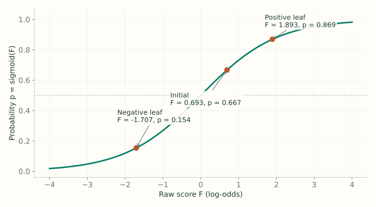
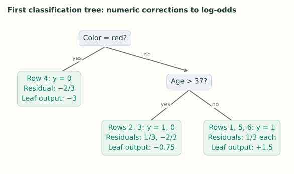

3. Classification: Main Ideas
Notes on StatQuest with Josh Starmer · Gradient Boost Part 3 · 17:03 video. Explanations and redrawn figures follow the lecture’s worked example.
The additive-tree idea stays the same for binary classification. What changes is the scale: trees add to a log-odds score, which we convert into a probability.
1. Start with the overall class proportion
Video 0:52 ↗| Row | Likes popcorn | Age | Color | Loves Troll 2 ($y$) |
|---|---|---|---|---|
| 1 | Yes | 12 | Blue | 1 |
| 2 | Yes | 87 | Green | 1 |
| 3 | No | 44 | Blue | 0 |
| 4 | Yes | 19 | Red | 0 |
| 5 | No | 32 | Green | 1 |
| 6 | No | 14 | Blue | 1 |
Four of six people love the movie. The initial probability is $p_0=4/6=2/3$. Convert it into the log-odds score stored by the model:
To turn any score $F$ back into a probability, use the sigmoid:
At a 0.5 probability threshold, this initial model predicts “yes” for everyone. It has not used anyone’s features yet.
The video often rounds both the score and probability to 0.7. Here we retain $F_0=\log 2$ and $p_0=2/3$, so the two scales stay distinct. This produces slightly different displayed leaf values.

Why have a score as well as a probability?
We want every tree to contribute an ordinary number that can be positive or negative. A probability has boundaries at 0 and 1; adding unrestricted tree outputs directly to it can cross those boundaries. A log-odds score can take any real value, while sigmoid always maps the final score into the valid probability range.
Odds compare the two outcomes: four yes labels for two no labels give odds of $4/2=2$. Taking the log gives $F_0=\log2$. This means the starting prediction favors yes; it does not mean the probability is twice as large as 1.
The same initial score goes to every row. There is no personal information in this baseline yet. The trees introduce that dependence by assigning different score corrections to different feature regions.
2. Calculate the pseudo-residuals
Video 3:37 ↗A “yes” row has residual $1-2/3=1/3$: increase its predicted probability. A “no” row has residual $0-2/3=-2/3$: decrease it. These numbers measure what the current model still gets wrong.
Fit a regression tree using popcorn preference, age, and color to predict these numeric residuals. The final task is classification, but this tree learns numeric corrections.
What exactly is this tree learning?
A regression tree can fit any numeric target; that target does not have to be the original outcome. Here the six new targets are $[1/3,1/3,-2/3,-2/3,1/3,1/3]$. A useful split groups people who need their scores to move in similar directions.
The color-red rule isolates row 4, whose current probability is too high. Among the remaining rows, the age rule separates the mixed group of rows 2 and 3 from three positive rows. The original features provide the rules; the current errors tell us whether those rules group correction requests well.
The word “pseudo” matters: $y-p$ is a loss-reducing direction, not the exact amount to add to the log-odds score. Predicting these targets supplies the regions. We then calculate a score correction for each region.
3. Calculate corrections on the log-odds scale
Video 5:49 ↗The tree uses residuals to find useful groups. Its final leaf output must be an addition to $F$, the log-odds score. In the lecture, the leaf correction is
The numerator adds the residuals in this leaf. The denominator adds $p_i(1-p_i)$ for those same rows. Lecture 4 derives this Newton update from the loss; for now, use it to calculate the tree’s outputs.

Initially every denominator contribution is $(2/3)(1/3)=2/9$:
| Leaf | Residual sum | Denominator sum | Output $\gamma$ |
|---|---|---|---|
| Red: row 4 | $-2/3$ | $2/9$ | −3 |
| Not red, age > 37: rows 2, 3 | $1/3-2/3=-1/3$ | $4/9$ | −0.75 |
| Not red, age ≤ 37: rows 1, 5, 6 | $1/3+1/3+1/3=1$ | $6/9$ | +1.5 |
Read one numerator and denominator row by row
Take rows 2 and 3. Row 2 asks to increase the prediction by its positive residual $1/3$; row 3 asks to decrease it by its negative residual $-2/3$. The net request is $-1/3$, so the shared score correction should be negative.
Both rows also contribute curvature, $2/9$ each. The denominator is therefore $4/9$, and the leaf outputs $(-1/3)/(4/9)=-0.75$. We add the numerator contributions and denominator contributions separately. We do not calculate a probability by averaging these two labels and store that probability as the tree’s output.
For the three positive rows, their residuals reinforce one another. The numerator is 1 and the denominator is $2/3$, giving +1.5. Having three rows rather than one does not triple the output when their predictions and labels are identical: both sums grow by the same factor.
4. Add to the score, then convert to probability
Video 8:58 ↗The lecture uses a large learning rate, 0.8, to make changes easy to see. For row 1, the tree outputs 1.5:
The probability has moved from 0.6667 toward the observed label 1. Apply the same procedure to the other leaves:
| Rows | Updated score | Updated probability | New residual $y-p$ |
|---|---|---|---|
| 1, 5, 6 | 1.8931 | 0.8691 | +0.1309 |
| 2 | 0.0931 | 0.5233 | +0.4767 |
| 3 | 0.0931 | 0.5233 | −0.5233 |
| 4 | −1.7069 | 0.1536 | −0.1536 |
Rows 2 and 3 share a leaf but have opposite labels. The shared downward correction helps row 3 and hurts row 2. A single tree need not improve every row; the next tree learns from the errors that remain.
A mixed leaf can improve the total while hurting one row
Rows 2 and 3 start with the same probability, $2/3$, but opposite labels. One would prefer probability 1; the other would prefer 0. Since they share a leaf, this tree cannot satisfy both independently.
The shared update moves their common probability toward 0.5, which is the best common probability for one yes and one no. Their combined log loss drops from about 1.504 to 1.388, even though row 2’s individual loss increases. The tree is minimizing a total over its rows.
At threshold 0.5, both still receive the class “yes” after this round because their probability is 0.5233. So the probability estimates can improve before the number of correct hard labels changes. Boosting is driven by the loss, not by whether a tiny score change happens to cross the classification threshold.
5. Build the next tree from the new errors
Video 10:57 ↗Recompute $y_i-p_i$, fit another regression tree, calculate its leaf corrections, and update the scores again. The probabilities now differ across rows, so each denominator must use that row’s current $p_i$.
For example, if a leaf in the next tree isolates row 2, its correction is
It can now raise the score that the first tree lowered.
For that hypothetical single-row leaf, the new score would be $0.0931+0.8(1.9111)\approx1.6220$, giving probability about 0.8351. This calculation shows how a later tree can correct an earlier compromise; it does not assert that the lecture’s next tree must isolate this row.
The updated probabilities also change the denominator. Row 2 now contributes about $0.5233(1-0.5233)=0.2495$, while row 1 contributes about $0.8691(1-0.8691)=0.1138$. Reusing $2/9$ from the initial round would produce the wrong next corrections.
6. Classify a new person
Video 14:28 ↗Start with $F_0=\log2$. Route the person through every tree and add each scaled leaf output. Apply sigmoid once to the final score, then compare the probability with the chosen threshold.
Features → one leaf per tree → add log-odds corrections → sigmoid → class.
The leaf values are neither class votes nor probabilities.
Follow a new person without using their answer
Suppose a new person’s favorite color is blue and their age is 30. In the first tree they are not red and their age is not greater than 37, so they reach the +1.5 leaf. After that tree, their score is $\log2+0.8(1.5)$ and their probability is about 0.8691.
The actual yes/no answer is not needed for this route. Later trees may ask different questions and contribute different amounts. Apply sigmoid to the sum of their score contributions; summing the trees’ separate sigmoid probabilities would define a different model.
The final class also depends on the chosen threshold. A probability of 0.8691 gives yes at threshold 0.5, but no at threshold 0.9. Changing that decision threshold does not retrain the trees or alter the probability estimate.